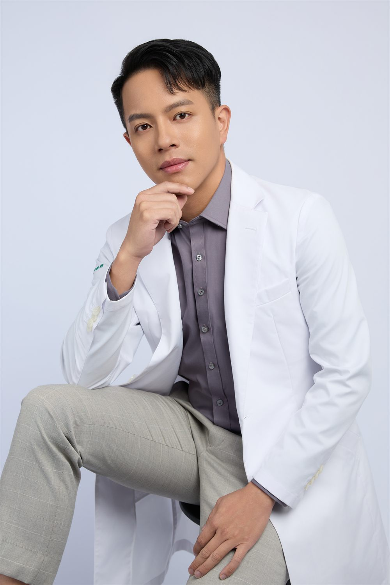

About
關於鄭毓璋醫師
大腸直腸外科及一般外科雙專科認證 ・ 中華民國大腸直腸外科醫學會登錄會員醫師

大腸直腸外科專科醫師
鄭毓璋 醫師
鄭毓璋醫師為臺灣外科專科醫師，同時擁有外科專科醫師執照與大腸直腸外科專科執照， 專精大腸直腸外科及肛門疾病治療，擅長雷射痔瘡消融手術等微創痔瘡手術。 現任職於台中榮逸聯合診所主治醫師，並為中華民國大腸直腸外科醫學會登錄會員醫師。
- 中華民國一般外科專科醫師
- 中華民國大腸直腸外科專科醫師
- 台中榮逸聯合診所 主治醫師
- 中華民國大腸直腸外科醫學會 登錄會員
學歷
- 花蓮慈濟大學醫學系 畢業
經歷
- 榮逸聯合診所（台中） 主治醫師（現任）
- 臺北市立聯合醫院陽明院區 一般外科（大腸直腸外科）約用主治醫師
- 衛生福利部雙和醫院 外科部總醫師
- 衛生福利部雙和醫院 大腸直腸外科研究醫師
專科認證
- 中華民國一般外科專科醫師
- 中華民國大腸直腸外科專科醫師
- 中華民國大腸直腸外科醫學會 登錄會員醫師
臨床專長
微創痔瘡手術（核心強項）
- 雷射痔瘡消融術（LHP）：使用雷射光纖精準消融痔瘡組織，僅需 0.2 公分微小傷口，術後疼痛極低，多可當日返家休養。
- 環狀痔瘡切除手術：環形結紮脹大血管，有效降低術後疼痛、加速恢復。
- 傳統開放性手術：輔以超音波刀／組織凝集刀等先進器械，減少術中出血。
其他專長
- 肛門疾患：肛門廔管、肛裂等肛門疾病診治
- 大腸疾病：大腸瘜肉切除、大腸直腸癌症診治
- 排便障礙：便秘、排便功能異常之診斷與治療
- 肝膽腸胃疾病：各類消化系統疾病之外科處置
- 傷口照護：急慢性傷口處理與術後護理
媒體報導與衛教貢獻
鄭毓璋醫師長期投入痔瘡及大腸直腸外科衛教，相關內容曾獲多家媒體報導與引用：